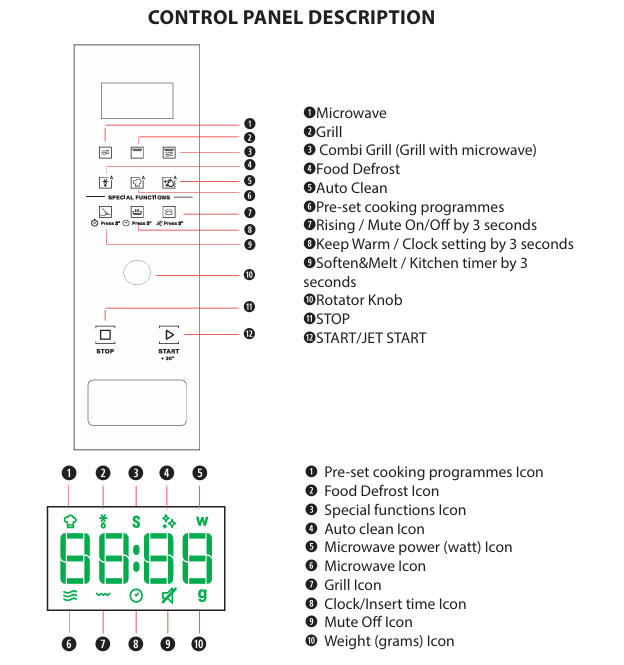
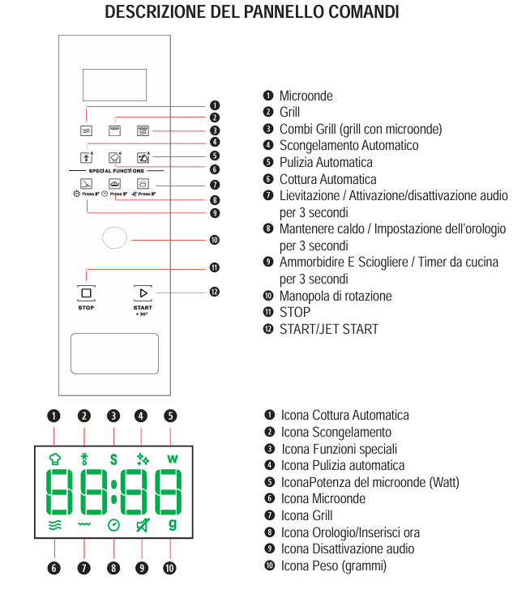

Microwave
Tips
- Do not use plastic containers, even microwave-safe ones, with the grill or combi-grill functions.
- Use only heat-resistant dishes with the grill.
- Do not touch the grill when it is hot.
- Do not cook or reheat whole eggs, with or without shell: they can explode.
- Liquids can get hotter than boiling without visible bubbles: let them rest a moment and stir before taking them out.
- Do not use the oven without the turntable and its support in place.
- Do not switch the oven on when it is empty.
To avoid overheating
- Do not heat liquids in narrow-necked containers.
- Always check the temperature of children's food before serving.
- Always use pot holders or oven gloves for hot containers.
Control panel

Microwave
- Press the button with the microwave icon.
- Choose the power by pressing the same button again or turning the knob.
- Set the time by turning the knob.
- Press start.
Grill
- Press the button with the grill icon.
- Set the time by turning the knob.
- Press start.
Combi grill
- Press the combi-grill button.
- Choose the type of cooking by pressing the button again or turning the knob.
- Set the time by turning the knob.
- Press start.
Automatic defrost
- Press the automatic-defrost button.
- Choose the food category (meat, vegetables, fish, poultry) by pressing the button again or turning the knob.
- Set the weight by turning the knob.
- Press start.
Cleaning
- Clean the oven regularly, removing all food residues.
- Use a soft cloth and a mild detergent inside and outside.
- Do not use steam cleaners.
- Clean the turntable and its support regularly.
If you have any problem, contact the host, Alessandro.
Microonde
Suggerimenti
- Non usare contenitori di plastica, anche se adatti al microonde, con le funzioni grill o combi grill.
- Con il grill usa solo stoviglie resistenti al calore.
- Non toccare la griglia quando è calda.
- Non cuocere né riscaldare uova intere, con o senza guscio: possono esplodere.
- I liquidi possono superare l'ebollizione senza bollicine visibili: lasciali riposare un attimo e mescola prima di estrarli.
- Non usare il forno senza il piatto rotante e il suo supporto.
- Non accendere il forno quando è vuoto.
Per evitare il surriscaldamento
- Non scaldare liquidi in contenitori a collo stretto.
- Controlla sempre la temperatura del cibo per bambini prima di servirlo.
- Usa sempre presine o guanti da forno per i contenitori caldi.
Pannello comandi

Microonde
- Premi il tasto con l'icona microonde.
- Scegli la potenza premendo ancora lo stesso tasto o ruotando la manopola.
- Imposta il tempo ruotando la manopola.
- Premi start.
Grill
- Premi il tasto con l'icona grill.
- Imposta il tempo ruotando la manopola.
- Premi start.
Combi grill
- Premi il tasto combi grill.
- Scegli il tipo di cottura premendo ancora il tasto o ruotando la manopola.
- Imposta il tempo ruotando la manopola.
- Premi start.
Scongelamento automatico
- Premi il tasto scongelamento automatico.
- Scegli la categoria di cibo (carne, verdure, pesce, pollame) premendo ancora il tasto o ruotando la manopola.
- Imposta il peso ruotando la manopola.
- Premi start.
Pulizia
- Pulisci il forno regolarmente, togliendo tutti i residui di cibo.
- Usa un panno morbido e un detergente delicato dentro e fuori.
- Non usare pulitori a vapore.
- Pulisci regolarmente il piatto rotante e il suo supporto.
Se riscontri problemi, contatta l’host, Alessandro.
Microondas
Sugerencias
- No uses recipientes de plástico, aunque sean aptos para microondas, con las funciones grill o combi grill.
- Con el grill usa solo recipientes resistentes al calor.
- No toques la parrilla cuando esté caliente.
- No cocines ni calientes huevos enteros, con o sin cáscara: pueden explotar.
- Los líquidos pueden superar la ebullición sin burbujas visibles: déjalos reposar un momento y remueve antes de sacarlos.
- No uses el horno sin el plato giratorio y su soporte.
- No enciendas el horno cuando esté vacío.
Para evitar el sobrecalentamiento
- No calientes líquidos en recipientes de cuello estrecho.
- Comprueba siempre la temperatura de la comida de los niños antes de servirla.
- Usa siempre manoplas o guantes de cocina para los recipientes calientes.
Panel de mandos
El esquema está en italiano.
Microondas
- Pulsa el botón con el icono de microondas.
- Elige la potencia pulsando otra vez el mismo botón o girando el mando.
- Ajusta el tiempo girando el mando.
- Pulsa start.
Grill
- Pulsa el botón con el icono de grill.
- Ajusta el tiempo girando el mando.
- Pulsa start.
Combi grill
- Pulsa el botón combi grill.
- Elige el tipo de cocción pulsando otra vez el botón o girando el mando.
- Ajusta el tiempo girando el mando.
- Pulsa start.
Descongelación automática
- Pulsa el botón de descongelación automática.
- Elige la categoría de alimento (carne, verduras, pescado, aves) pulsando otra vez el botón o girando el mando.
- Ajusta el peso girando el mando.
- Pulsa start.
Limpieza
- Limpia el horno con regularidad, quitando todos los restos de comida.
- Usa un paño suave y un detergente suave por dentro y por fuera.
- No uses limpiadores de vapor.
- Limpia con regularidad el plato giratorio y su soporte.
Si tienes algún problema, contacta con el anfitrión, Alessandro.